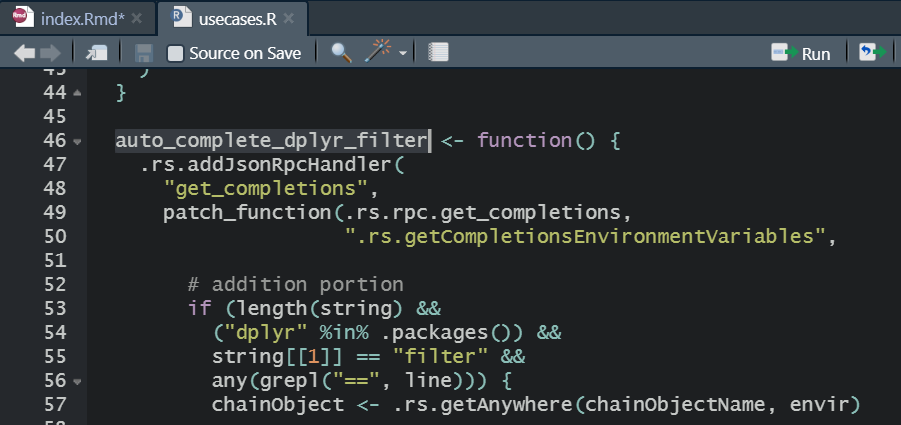
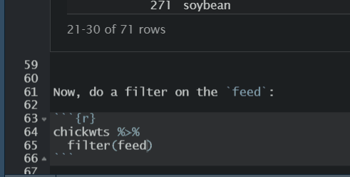

remotes::install_github("r-rudra/patch")Autocomplete Character/Factor values in RStudio
Credit
This post is based on Ayush Patel’s post that describes the use of the patch package that lets you choose from a menu of character/factor values in RStudio.
Install the patch package
The official description of the package is:
{patch} is #rstats package for patching functions on the fly
Load the patch package
The patch package has a script named usecases.R that shows the common use cases of the package. It is located in the installed package folder as shown below:

If you open the usecases.R script, you’ll see that contains a function called auto_complete_dplyr_filter, as shown in the image below:

Therefore, we need to load this function to get the feature of autocompleting the character or factor values in a dplyr::filter():
source(system.file("embedded","usecases.R",package = "patch"))
These are designed for R-Studiolibrary(dplyr)
Attaching package: 'dplyr'The following objects are masked from 'package:stats':
filter, lagThe following objects are masked from 'package:base':
intersect, setdiff, setequal, unionAutocomplete in action
Now we can easily select the desired character/factor value from the autocomplete menu. Let’s first load a data set and see the factor values in it.
data("chickwts")
chickwts weight feed
1 179 horsebean
2 160 horsebean
3 136 horsebean
4 227 horsebean
5 217 horsebean
6 168 horsebean
7 108 horsebean
8 124 horsebean
9 143 horsebean
10 140 horsebean
11 309 linseed
12 229 linseed
13 181 linseed
14 141 linseed
15 260 linseed
16 203 linseed
17 148 linseed
18 169 linseed
19 213 linseed
20 257 linseed
21 244 linseed
22 271 linseed
23 243 soybean
24 230 soybean
25 248 soybean
26 327 soybean
27 329 soybean
28 250 soybean
29 193 soybean
30 271 soybean
31 316 soybean
32 267 soybean
33 199 soybean
34 171 soybean
35 158 soybean
36 248 soybean
37 423 sunflower
38 340 sunflower
39 392 sunflower
40 339 sunflower
41 341 sunflower
42 226 sunflower
43 320 sunflower
44 295 sunflower
45 334 sunflower
46 322 sunflower
47 297 sunflower
48 318 sunflower
49 325 meatmeal
50 257 meatmeal
51 303 meatmeal
52 315 meatmeal
53 380 meatmeal
54 153 meatmeal
55 263 meatmeal
56 242 meatmeal
57 206 meatmeal
58 344 meatmeal
59 258 meatmeal
60 368 casein
61 390 casein
62 379 casein
63 260 casein
64 404 casein
65 318 casein
66 352 casein
67 359 casein
68 216 casein
69 222 casein
70 283 casein
71 332 caseinNow, do a filter on the feed:

And the result is:
chickwts %>%
filter(feed == "linseed") weight feed
1 309 linseed
2 229 linseed
3 181 linseed
4 141 linseed
5 260 linseed
6 203 linseed
7 148 linseed
8 169 linseed
9 213 linseed
10 257 linseed
11 244 linseed
12 271 linseed